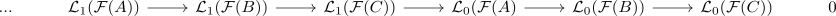

left derived functor and long exact sequence
Proposition
Let $\mathcal{A}, \mathcal{B}$ be abelian categories, $\mathcal{F}: \mathcal{A} \rightarrow \mathcal{B}$ an additive functor and $\mathcal{L}\mathcal{F}$ the left derived functor. Then for each short exact sequence $A \rightarrow B \rightarrow C$ there exists a long exact sequence

and $\mathcal{L}_0(\mathcal{F}(-)) \cong \mathcal{F}$ are isomorphic if $\mathcal{F}$ is right exact